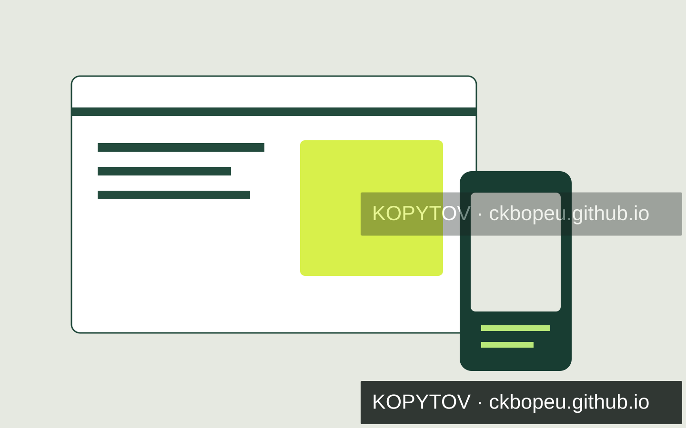
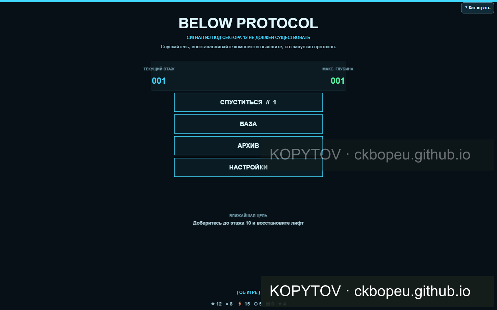

САМОСТОЯТЕЛЬНЫЙ ДЕМОПРОЕКТ01 / 2026
 Открыть кейс ↗
Открыть кейс ↗BOLTERRA
25 товаров. Поиск, фильтры, подробные карточки и оснастка. Дизайн и рабочая адаптивная реализация.
ДМИТРИЙ КОПЫТОВ / ДИЗАЙН И РАЗРАБОТКА
Создаю сайты, браузерные приложения и игры. Продумываю структуру, собираю интерфейс и проверяю, как он работает.
01 / ИЗБРАННЫЕ РАБОТЫ
Коммерческий дизайн, тестовое задание и самостоятельные проекты. У каждого — своя задача и свой результат.
Все проекты ↗Открыть кейс ↗25 товаров. Поиск, фильтры, подробные карточки и оснастка. Дизайн и рабочая адаптивная реализация.

Открыть кейс ↗Макет в Figma, версии для компьютера и телефона. Согласование с заказчиком и правки по обратной связи.
Спокойный дизайн стоматологии, две темы и адаптивы. Дополнительно — браузерный прототип.

Открыть кейс ↗Match-3, тактические сражения и сохранение прогресса. Отдельный эксперимент с игровыми интерфейсами.
02 / КАК РАБОТАЮ
Использую современные AI-инструменты. Решения, проверка и доработка остаются частью моей работы.
Обсуждаем результат, материалы, ограничения и объём. Согласовываем, что именно должно получиться.
Собираю структуру и первый вариант. На этом этапе проще обсудить композицию и поведение интерфейса.
Смотрю адаптивы и основные сценарии, вношу согласованные правки, готовлю результат к передаче.
03 / НЕМНОГО ОБО МНЕ
Работаю на телевидении: занимаюсь эфирной графикой. С апреля 2026 года развиваю самостоятельные IT-проекты.
Уже выполнил оплаченный заказ на веб-дизайн. Сейчас развиваю портфолио и беру понятные задачи по сайтам, интерфейсам и прототипам.
Подробнее обо мне ↗04 / ДАВАЙТЕ ОБСУДИМ
Пришлите задачу или коротко опишите идею.
Обсудим объём, материалы и следующий шаг.
Переписка удобнее.
Созвоны — по предварительной договорённости.